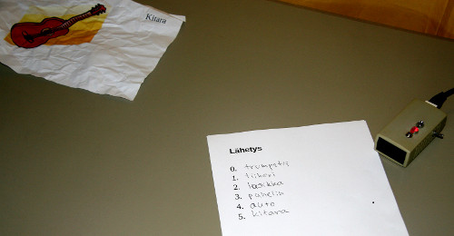
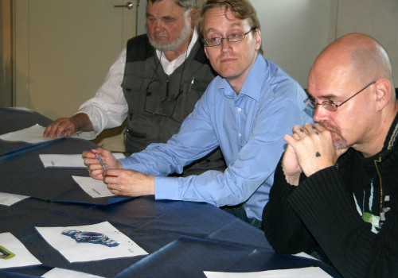

Tieteiden talo 9.9.2009, klo 18.00. Viidennen kerroksen huoneessa paikalla ovat esitestin järjestäjä Skepsiksen varapuheenjohtaja Otto J. Mäkelä ja yhdistyksen jäsenet Jukka Häkkinen, Heikki Nevala, Jussi K. Niemelä ja Ilpo V. Salmi. Aulassa odottaa mies, joka haluaa antaa itselleen ja Skepsikselle näytön yliaistillisesta kyvystään. Myös Skepsiksen haasteen 10 000 euroa kiinnostaa.
Skepsis on luvannut suorittaa hänelle yksinkertaisen esitestin. Jos kyseinen testi onnistuu, mies voi myöhemmin osallistua varsinaiseen, paljon tiukemmin kontrolloituun haasteeseen.
Koehenkilön tehtävä on lähettää viisi isosta joukosta valittua kuvaa vastaanottajille viereiseen huoneeseen. Hän lähettää kuvia kankaalla peitetyn oviaukon lävitse. Vastaanottajat tietävät, mistä viidestätoista kuvasta lähetettävät kuvat tullaan valitsemaan.
Puheen kautta välittyvän informaatiovuodon välttämiseksi kommunikointi huoneiden välillä tapahtuu ”liikennevalojen” avulla. Johdon molemmissa päissä on pieni rasia, jossa on kaksi valoa – punainen ja vihreä – ja kytkin. Jompi kumpi valoista palaa koko kokeen ajan molemmissa päissä johtoa. Kummassa tahansa päässä kytkintä kääntämällä päällä oleva valo vaihtuu molemmissa päissä toiseksi. Kokeen alussa liikennevalot ovat punaisella.

Viidestätoista koehenkilön testiin valitsemasta kuvasta kymmenen on rutistettu palloksi lähettäjän puoleiseen paperikoriin. Otto J. Mäkelä aloittaa kokeen poimimalla korista satunnaisen kuvan koehenkilön eteen pöydälle. Tämän jälkeen hän lisää koriin ”täydennyskuvan”. Näin korissa on koko ajan kymmenen kuvaa, joihin seuraava satunnaisvalinta kohdistuu. Sarja toistuu viisi kertaa, jolloin vastaanottajilla on joka kierroksella 1:10 mahdollisuus satunnaisesti saada oikea vastaus. Mahdollisuus saada kaikki viisi satunnaisesti oikein on 1:100 000.
Otto J. Mäkelä kääntää kytkintä. Valo vaihtuu vihreäksi sekä lähetys- että vastaanottopäässä. Kun kaikilla vastaanottajilla on vastaukset paperilla tai aikaa on kulunut kaksi minuuttia, Heikki Nevala kääntää verhon takana vastaanottopään kytkintä, jolloin molemmat valot vaihtuvat taas punaiselle.
Koehenkilö on tosissaan. Hän seisoo kankaan edessä lippalakki päässään ja keskittyy pöydällä olevaan kuvaan. Hän vapisee ja hikoilee niin, että t-paidan selkä ja kainalot kostuvat. Kun kuva viimein on hänen silmissään, hän lähettää sen toiseen huoneeseen päätään eteenpäin voimakkaasti heilauttamalla.
Kuvan vastaanottajat yrittävät tavoittaa viestiä vakavissaan. Testin helpotukseksi on sovittu, että jos mitään kuvaa ei heidän päähänsä ilmesty, he arvaavat jonkin viidestätoista mahdollisesta.

Kun tulokset tarkastettiin, havaittiin ettei koehenkilö ollut saanut välitettyä yhdellekään vastaanottajalle yhtään oikeaa kuvaa. Yksi osuma kahdestakymmenestä vastaanottoyrityksestä ei kuitenkaan olisi ollut kovin epätodennäköinen. Tämä yksikin osuma olisi koehenkilölle itselleen riittänyt näytöksi yliluonnollisesta kyvystään.
Koehenkilö totesi, että koejärjestelyt olivat hyvät. Omasta mielestään hänen olisi pitänyt saada lähetettyä kuvat kyseisessä olosuhteessa. Epäonnistumisen syyksi hän selitti yliyrittämistä, liian vähäistä treenausta, tekniikan pettämistä, jännittämistä, väsymystä, liiallista tupakanpolttoa ja henkilökohtaisia syitä. Hän kertoi, että hänen kykynsä on kausiluontoista ja viime aikoina hiipunut – vuosi sitten hän olisi onnistunut varmasti.
Uskoa kykyynsä koehenkilö ei menettänyt, koska osumia on arkielämässä aikaisemmin tullut.
Risto K. Järvinen